古河・横山町の焼肉屋、三宝園でございます。お好きな部位をお選びいただき、目の前の火で、お好きな加減に焼いていただく。当店にできるのは、その一皿を旨くすることだけでございます。
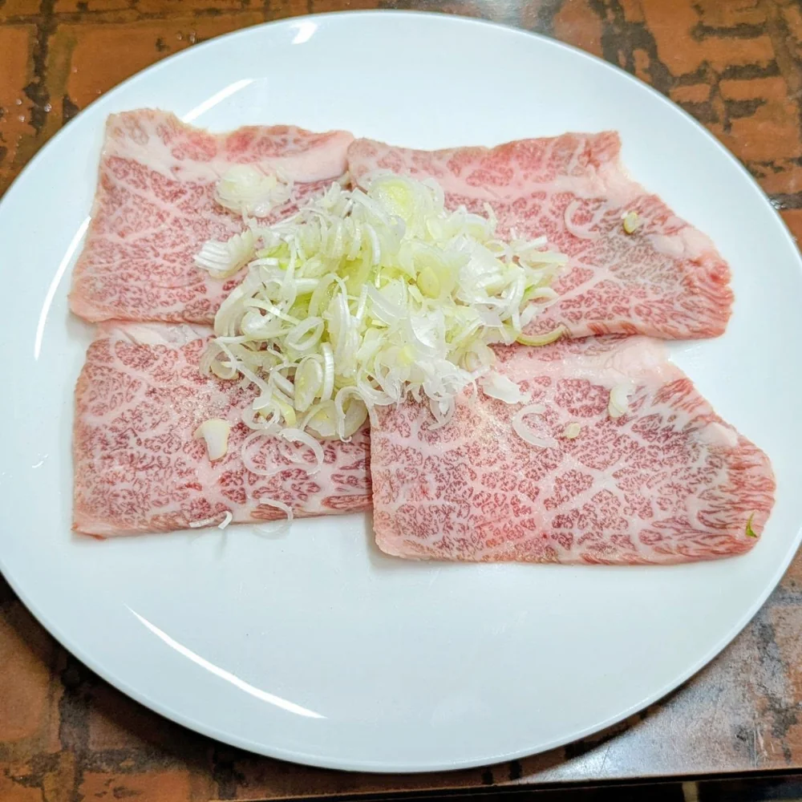
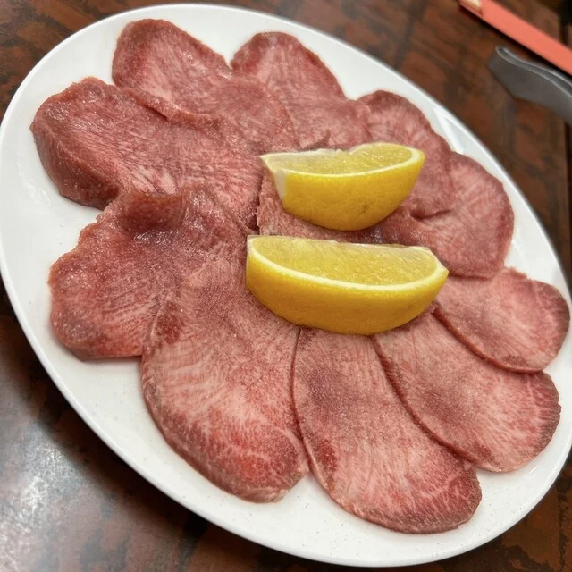
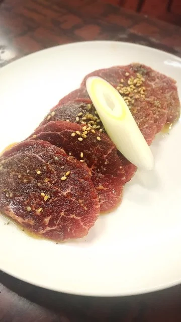
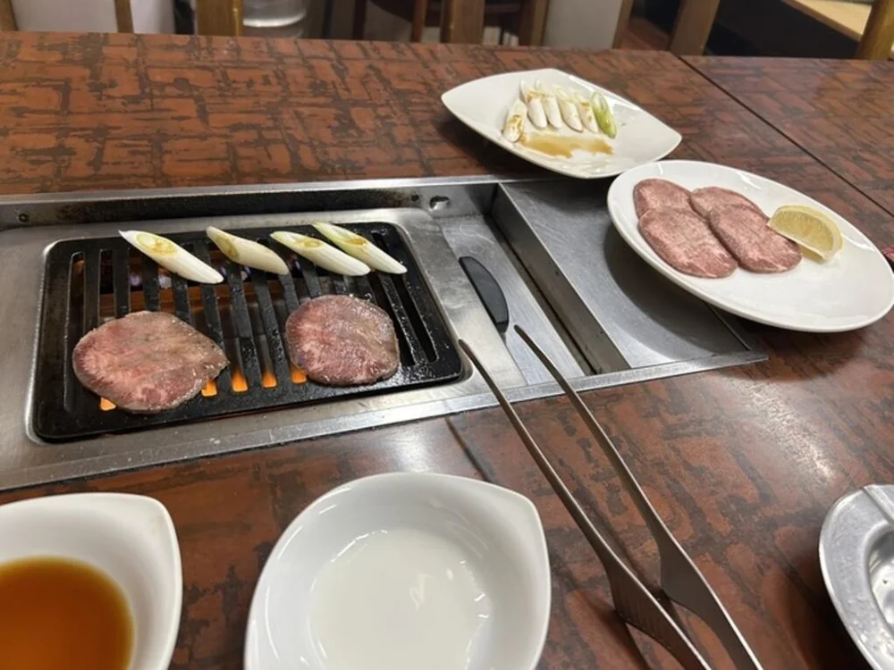
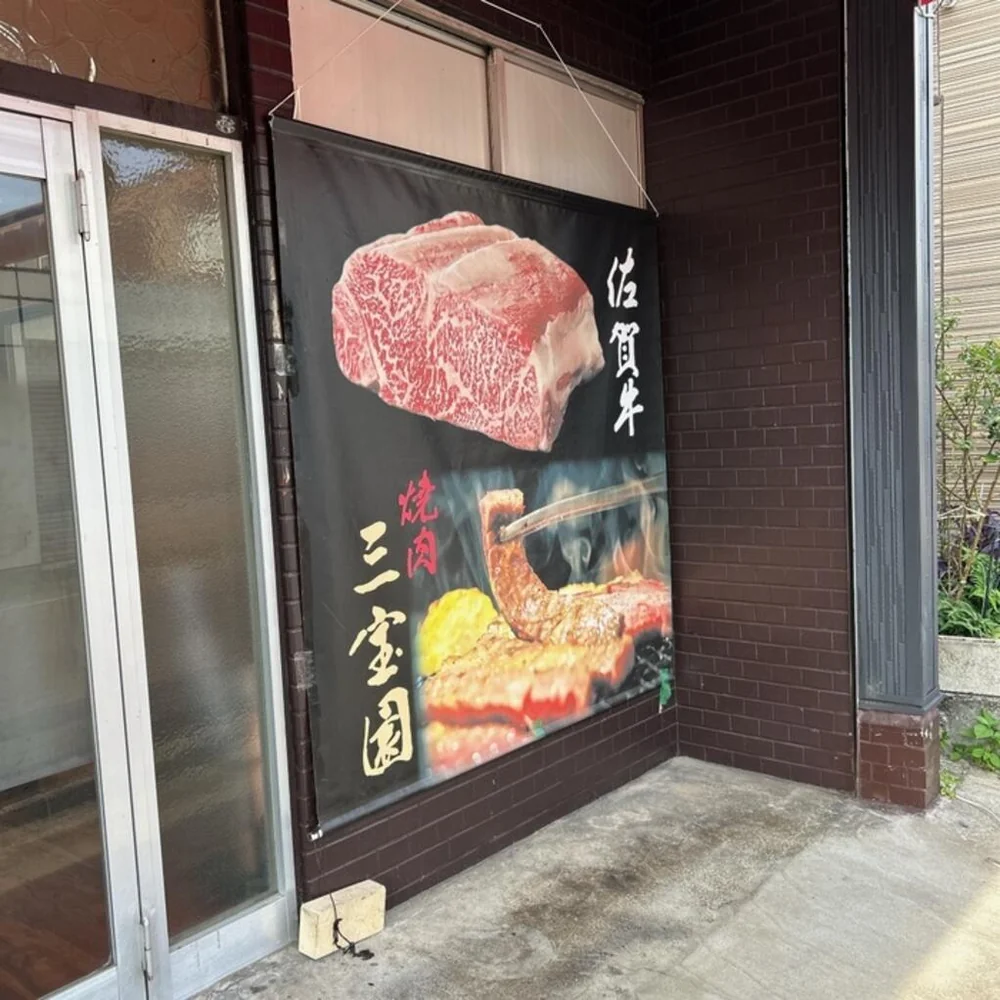
表の幕に掲げているとおり、当店がお出しするのは佐賀牛でございます。産地の講釈は、幕の三文字に任せております。お品書きの牛は、部位でお選びいただけます。
当店の卓には、白いごはんと並んで千切りキャベツがございます。焼いた肉をこれで巻いて召し上がるお客様が、幾人もいらっしゃいます。
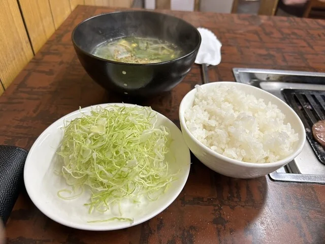
「焼いたハラミを千切りキャベツで包んで食べる！これいいですね。そういう食べ方なのメニューに書いてあったかな？千切りキャベツおかわりしました。」お客様の声より
同じ部位でも、塩とたれをご用意しているものがございます。まずは一皿、お好きなところからどうぞ。
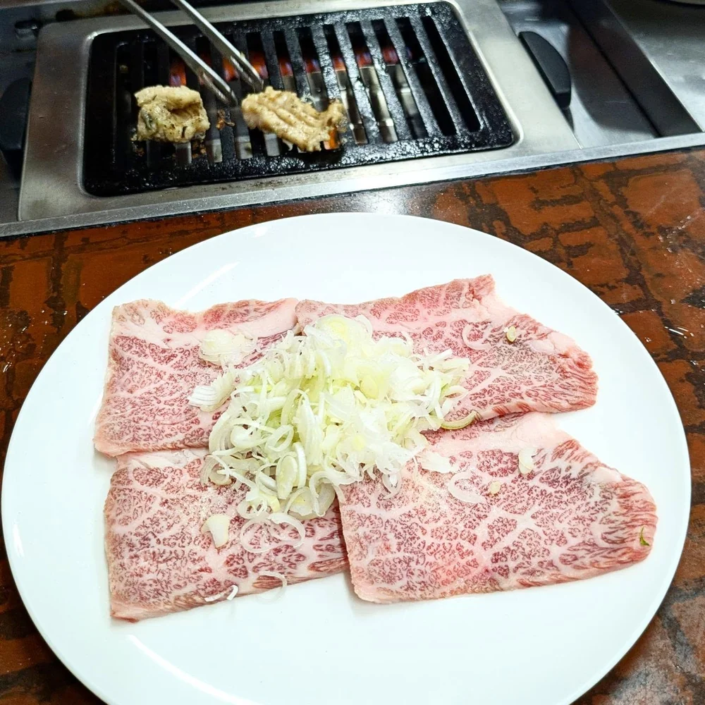
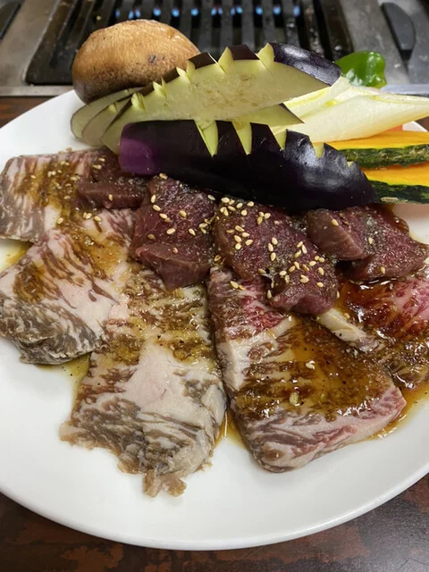
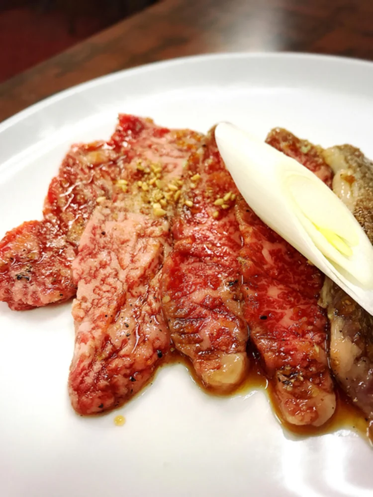
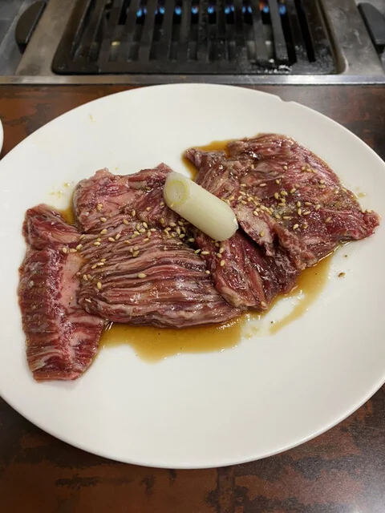
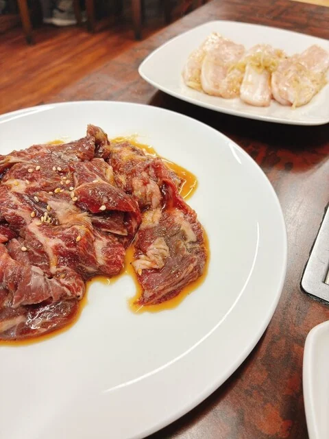
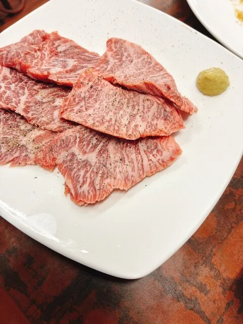
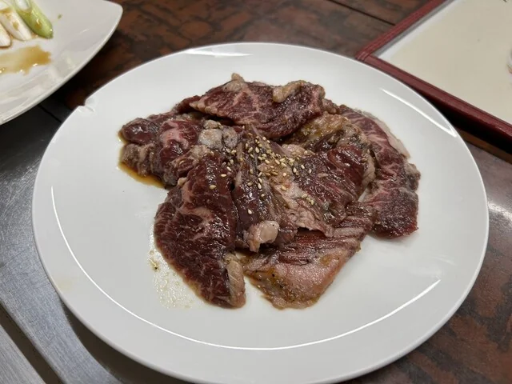
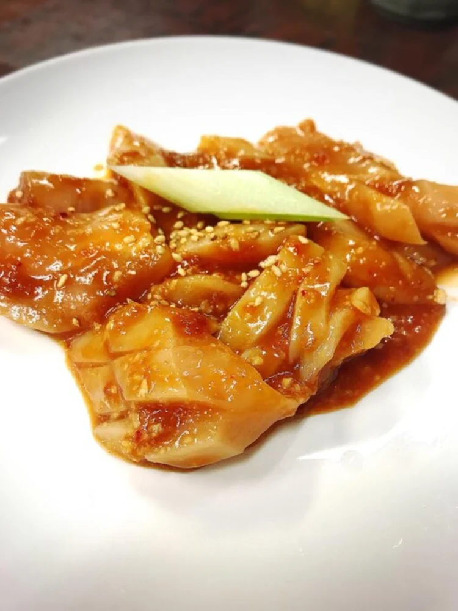
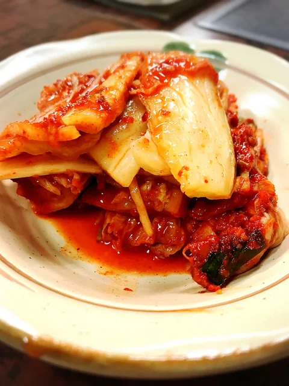
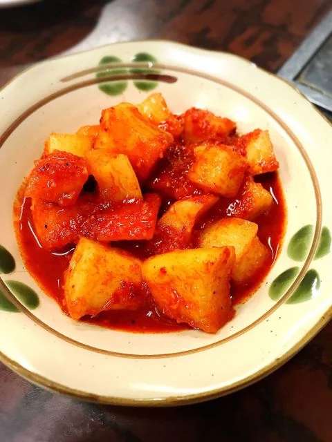
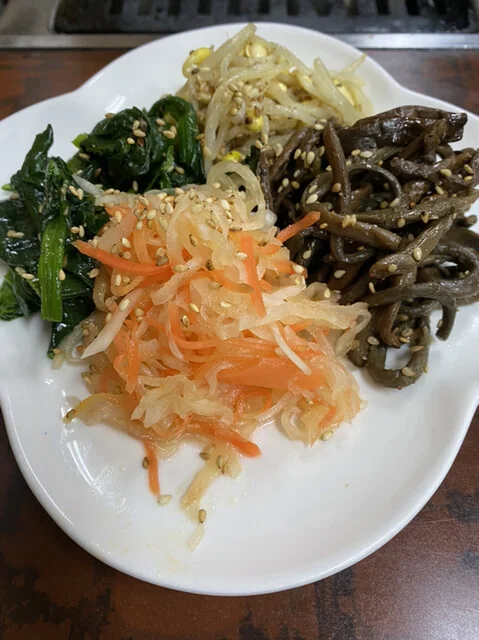
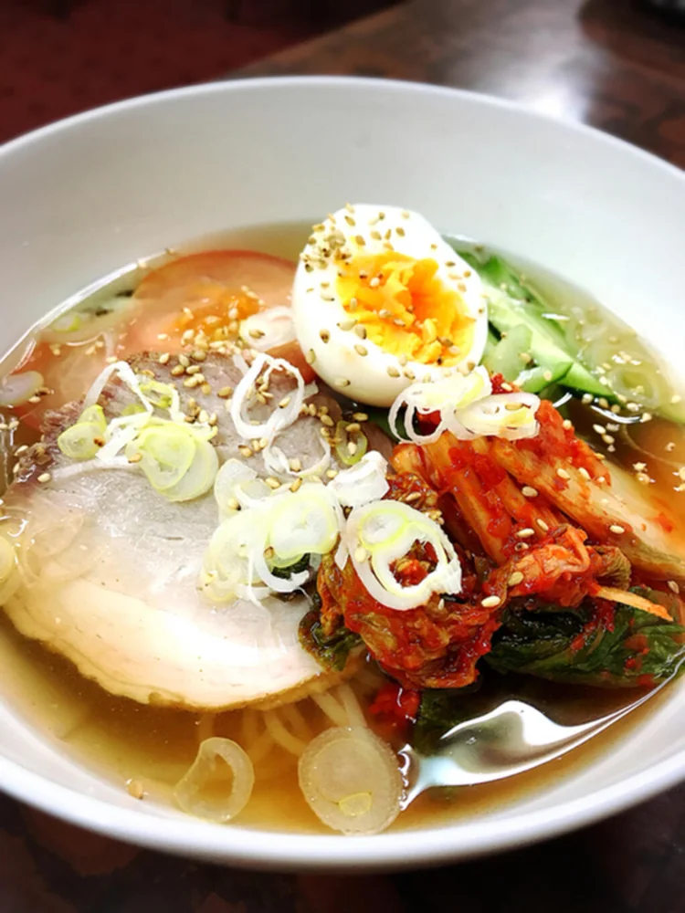
「個人店ならでは厳選されたメニューは、どれも大満足。」お客様の声より
「お肉はどれも鮮度がよく、カルビは脂の甘みがしっかり、ロースは柔らかく上品な味わい。厚みのあるタンも食べ応え抜群で、焼き加減次第でジューシーさが際立ちます。」お客様の声より
「マスターの雰囲気がよく 楽しく飲めたし、肉もすごく美味しかった 特におすすめは上カルビ」お客様の声より
| 住所 | 〒306-0022 茨城県古河市横山町1-5-5 |
|---|---|
| 電話 | 0280-22-6744 |
| 営業時間 | 16:00〜22:00 |
| 定休日 | 木曜日・金曜日 |
| アクセス | JR古河駅 西口から徒歩8分 バス停「はなももプラザ前」から徒歩1〜2分。黒い幕が目印でございます。 |
| 貸切 | 可（お電話でご相談ください） |
火を入れて、お待ちしております。